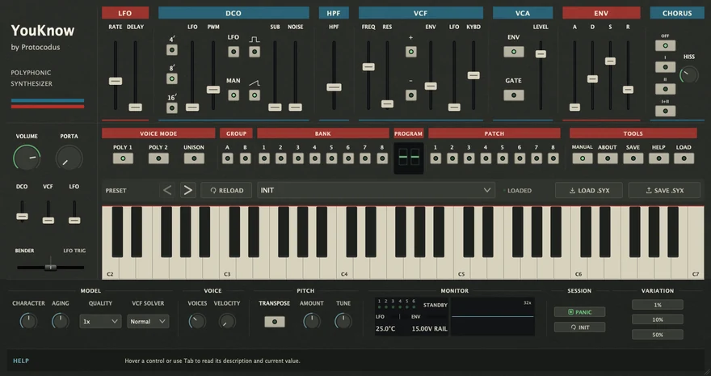
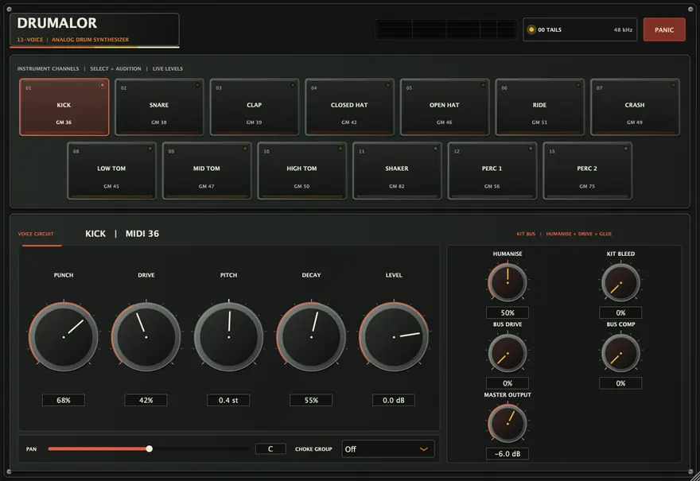
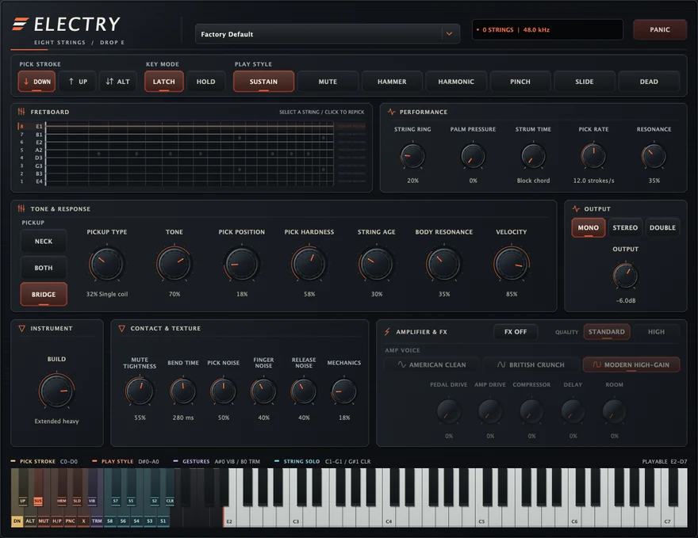
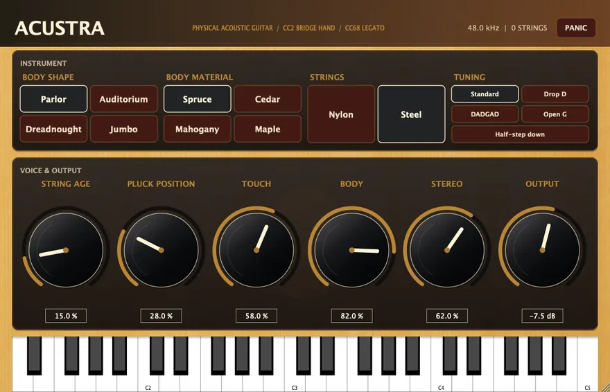
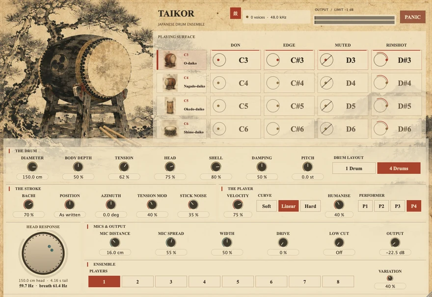
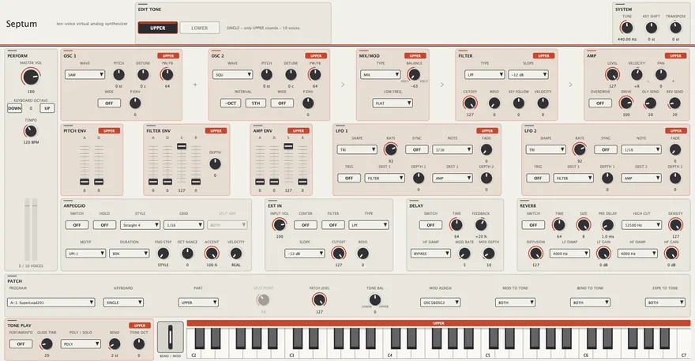
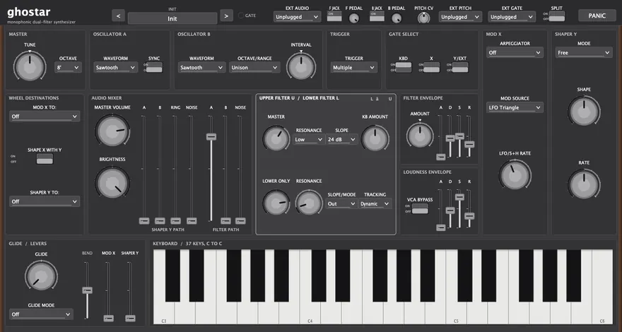

Primary sources first
Service notes, datasheets, owner's manuals and published papers, read at page level. The documentation names the source behind each modelling law rather than asking you to take the sound on trust.
Protocodus makes original software end to end: instruments that synthesise every note instead of replaying a recording, games that run in a browser tab, and the engines underneath both.
Plug-ins for VST3, Audio Unit and Standalone hosts, and a Rack Extension for the Reason rack. Every one is free, with a name-your-price option, and has a page carrying the panel, the specifications, the downloads and the documentation.

A six-voice circuit-modelled analogue polysynth with a direct subtractive path and a stereo bucket-brigade chorus, as a Rack Extension for Reason and as a VST3, AU and Standalone plug-in.
Product page
Thirteen drum voices, every hit generated as you play it from oscillators, noise, filters and resonators. No samples and no ROM images.
Product page
An eight-string Drop-E electric guitar modelled string by string, with a fretting hand that decides where in the neck a phrase actually lands.
Product page
An acoustic guitar synthesised from six string models, a passive measured bridge and a measurement-derived body, behind ten panel controls.
Product page
Four taiko drums and four strokes on a 4 by 4 keyboard grid, every stroke solved from a struck circular membrane rather than replayed.
Product page
A ten-voice virtual-analog synthesizer modelling the Roland SH-201, with two complete tones in every patch and a seven-saw SUPER SAW.
Product page
A monophonic synthesizer modelled from the documentation of the 1983 Crumar Spirit, built around the series dual filter that gives it its voice.
Product pageThese instruments are built the slow way: from service notes, datasheets, manuals and published research, with every modelling decision written down and every claim left testable.
Service notes, datasheets, owner's manuals and published papers, read at page level. The documentation names the source behind each modelling law rather than asking you to take the sound on trust.
Where the sources leave a value open, the choice is recorded as a choice, together with the measurement that would settle it. Known gaps are published alongside what is settled.
The audio demos committed with each instrument are rendered by continuous integration from that instrument's own shipping engine, so a demo cannot drift away from the code that made it.
C++20 and JUCE 8, packaged for macOS, Linux and Windows, with the documentation shipped as part of the product rather than written up afterwards.
The same appetite for real-time systems, pointed at graphics instead of audio. Nothing to install, no account to make.
An endless snowboarding run down a procedurally generated mountain with a 1990s retro aesthetic, responsive carving physics and dynamic weather.
Track the Moon's shadow from orbital space down to Prague and explore why solar eclipses occur and how totality unfolds.
Product support, a licensing question, or a piece of creative software you would like built. One address, answered directly.
protocodus@proton.meFor support, include the product, its version, your host application and your operating system.